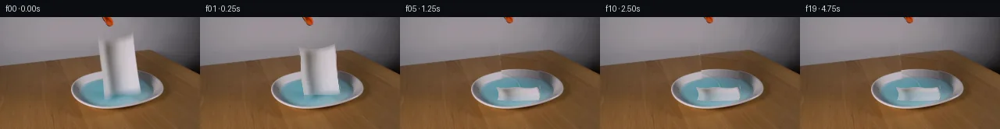

![首帧]()

Round 00
2026-11-05T13:54:37.579423+00:00像素候选变化代码 +238/−0inspection 更新
pixels 716e9dd542e7646a · code 9486007ebe37a328
查看本轮 generate.py 真实 diff
--- previous/generate.py
+++ current/generate.py
@@ -0,0 +1,238 @@
+"""PixelWorld continuation using only local source pixels and mathematical deformations."""
+from pathlib import Path
+import json
+import numpy as np
+from PIL import Image, ImageDraw
+from scipy.ndimage import map_coordinates, gaussian_filter, distance_transform_edt
+from scipy.spatial import Delaunay
+import cv2
+from artifact_io import save
+
+ROOT = Path(__file__).resolve().parent
+W, H = 256, 144
+SOURCE = np.asarray(Image.open(ROOT / 'first_frame.png').convert('RGB'))
+Y, X = np.mgrid[:H, :W].astype(float)
+RNG = np.random.default_rng(127)
+
+
+def smoothstep(a, b, value):
+ p = np.clip((value-a)/(b-a), 0, 1)
+ return p*p*(3-2*p)
+
+
+def polynomial_predict(known, coords, degree=3, ridge=0.01):
+ """Rebuild only missing areas from a low-order fit to visible scene RGB."""
+ xx, yy = coords
+ basis = [xx**i*yy**j for i in range(degree+1) for j in range(degree+1-i)]
+ design = np.stack(basis, axis=-1)
+ a = design[known]
+ colors = SOURCE[known].astype(float)
+ coef = np.linalg.solve(a.T@a + np.eye(a.shape[1])*ridge, a.T@colors)
+ return design@coef
+
+
+def polygon_mask(points, feather=0.5):
+ # Supersampled geometry is used only to construct local masks.
+ scale = 4
+ mask = Image.new('L', (W*scale, H*scale))
+ ImageDraw.Draw(mask).polygon([(round(x*scale), round(y*scale)) for x,y in points], fill=255)
+ m = np.asarray(mask.resize((W,H), Image.Resampling.LANCZOS)).astype(float)/255
+ return gaussian_filter(m, feather) if feather else m
+
+
+def source_geometry(u, v):
+ left = 125.6 + 8.2*v + 0.4*np.sin(2*np.pi*v)
+ right = 170.7 + 8.3*v
+ top = 25.0 + 5.3*np.sin(np.pi*u) - 5.3*u
+ bottom = 98.0 + 0.5*np.sin(np.pi*u) - 1.0*u
+ return left + (right-left)*u, top+(bottom-top)*v
+
+
+# Border measured from numeric row samples.
+u_border = np.linspace(0,1,100)
+v_border = np.linspace(0,1,100)
+edge_u = np.r_[u_border, np.ones(100), u_border[::-1], np.zeros(100)]
+edge_v = np.r_[np.zeros(100), v_border, np.ones(100), v_border[::-1]]
+px, py = source_geometry(edge_u, edge_v)
+paper_mask = polygon_mask(list(zip(px,py)), 0.45)
+remove_mask = np.clip(gaussian_filter((paper_mask>0.05).astype(float),0.65)*1.09,0,1)
+# The towel also produces a narrow pale reflection below its left fold.
+reflection = np.exp(-((X-137.0)/5.3)**2) * np.exp(-((Y-102.0)/5.8)**2)
+remove_mask = np.maximum(remove_mask, reflection*0.82)
+
+# Locally recover wall and table behind the falling towel.
+wall_line = 62.0 - 0.112*X
+wall_known = (Y<wall_line-3)&(X>90)&(X<204)&(Y>13)&(paper_mask<0.01)
+wall = polynomial_predict(wall_known, ((X-148)/58, (Y-30)/35), 3)
+table_known = (Y>wall_line+3)&(Y<71)&(X>94)&(X<216)&(paper_mask<0.01)
+table = polynomial_predict(table_known, ((X-148)/58, (Y-54)/20), 2)
+# Restore small-scale photographic grain without importing any new texture.
+noise = SOURCE.astype(float)-gaussian_filter(SOURCE.astype(float),sigma=(1.0,1.0,0))
+texture = np.stack([map_coordinates(noise[:,:,c], [Y, np.clip(245-X,0,W-1)], order=1) for c in range(3)],axis=-1)
+wall += 0.6*texture
+table += 0.55*texture
+wall_mix = smoothstep(-1.2, 1.2, Y-wall_line)
+rebuild = wall*(1-wall_mix[:,:,None]) + table*wall_mix[:,:,None]
+
+# Ellipse parameters inferred from the visible dish, not an external reference.
+outer = ((X-149.5)/59.2)**2 + ((Y-94.0)/27.4)**2
+inner = ((X-149.0)/47.4)**2 + ((Y-96.0)/19.4)**2
+water_mask = smoothstep(1.045,0.965,inner)
+water_known = (inner<0.95)&(remove_mask<0.025)&(SOURCE[:,:,1].astype(float)-SOURCE[:,:,0]>18)
+water = polynomial_predict(water_known, ((X-149)/48,(Y-96)/21), 3, ridge=0.04)
+water += texture*0.55
+water = np.clip(water, [65,105,115], [145,178,190])
+# In the occluded back arc, interpolate the strong left/right illumination.
+back_rim = np.stack([181-1.72*(X-125),175-1.73*(X-125),181-1.73*(X-125)],axis=-1)
+back_rim = np.clip(back_rim, [74,71,73], [189,185,192])
… diff truncated; 151 more lines …